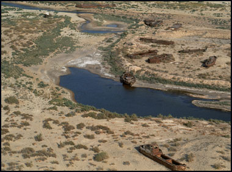

The Aral Sea Desiccation
The Decades of Disappearance: Once the fourth-largest lake in the world, the Aral Sea sat between Kazakhstan and Uzbekistan, supporting a massive fishing industry and a lush ecosystem. Starting in the 1960s, the Soviet government undertook a massive irrigation project to transform the arid plains into cotton plantations. To do this, they diverted the two main rivers that fed the sea, the Amu Darya and the Syr Darya. This was a strategic choice to prioritize "white gold" (cotton) over the long-term health of the water basin.

The result was one of the planet's worst environmental disasters. As the water source was cut off, the sea began to shrink at an alarming rate. By the 1990s, it had split into smaller, hyper-saline lakes, eventually losing 90 percent of its volume. The receding waters left behind a toxic desert of salt and pesticides that had run off from the cotton fields for decades. Violent dust storms now carry this chemical-laden salt for hundreds of miles, causing a localized health crisis where rates of throat cancer and respiratory disease have skyrocketed. What was once a thriving maritime region is now a "Ship Graveyard," with rusted fishing trawlers sitting in the middle of a desert, miles from any water.
From Exploitation to Mitigation: The initial strategy for decades was one of Inertia and Denial. Soviet planners were aware the sea might disappear but calculated that the economic output of cotton was worth the sacrifice of the ecosystem.
Key Facts
Date: 1960s–Present (Ongoing)
Location: Kazakhstan and Uzbekistan (Central Asia)
Casualties: Mass destruction of ecosystems/fisheries and widespread health crisis (throat cancer and respiratory disease)
Cause: Environmental Engineering Failure (Diversion of the Amu Darya and Syr Darya rivers for cotton irrigation)
The Kokaral Dam Strategy: In 2005, a new strategy was implemented by Kazakhstan and the World Bank. They built the eight-mile Kokaral Dam to separate the "North Aral" from the dead "South Aral."
The Restoration Goal: This strategy was designed to prioritize the smaller northern section. Since the dam’s completion, water levels in the North Aral have risen, salinity has dropped, and several species of fish have returned. However, the strategy essentially "sacrificed" the larger South Aral, which remains a toxic wasteland, to save a smaller fraction of the original sea.
The Aral Sea is a haunting case study in "Ecological Bankruptcy." It teaches us that treating natural resources as infinite for the sake of short-term industrial strategy can lead to permanent, irreversible regional collapse. It highlights the "strategy" of choosing one economic commodity over the very life-support system of a population.